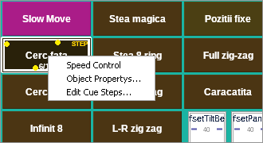
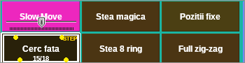

Buttons of the Live panel
For: FullPlayer
A button of the Live panel plays what it holds: a light sequence (its steps, one after another) or only its commands. Its settings are in Object Propertys.

Cerc fata runs: darker, with a white frame, the yellow dots on its border, the mark STEP and its step, 2 of 18. The other buttons are stopped.
Starting and stopping
- A click starts the button; another click stops it. The mouse over a button makes it lighter.
- While it runs, the button is darker and has a white frame; four yellow dots travel round its border, and at its bottom the step it is on and the number of steps, such as 2/18. With Animation on buttons ON not ticked (the Option tab) the dots stand still.
- A button without Loop stops by itself after its last step; with Loop it starts again from the first.
- Buttons with the same Group Index (not 0) are a group: starting one stops the others of the group that run. Many projects do the same with a macro: the macro of Cerc fata stops the other movements (see Macros).
- Two buttons with the same name on the panel play each on its own.
- A button with commands runs its On Start command when it starts and its On Stop command when it stops.
The marks on a button
| Mark | What it means |
|---|---|
| STEP (top right) | A Step on Remote button: the remote player steps it. Its dots go one way while it plays forward, the other way after Back, and stand still while it waits. See Remote, controllers and MIDI. |
| FLASH (top right) | A Flash button: it runs only while it is held - the mouse button or its key - and stops when let go. While it is held, Sound2Light does not react to the music (when Flash button take priority over Sound2Light is ticked in the Option tab). |
| FADE (top left) | The button has Fade Sequence and the Option tab's Fade Sequence is ticked: when it stops, its light goes down in the release time set there. |
| A track at the bottom | Speed Control (below). |
Keys and MIDI
A button can have a key of the keyboard and a pad or key of a MIDI controller (Object Propertys > Remote). The key works as a click: it starts the button, and pressed again stops it; a Flash button runs while the key is held. The keys do nothing while a window for writing is open (such as the Macro Editor) or while you type in a box.
Some projects write their keys on a page of the panel, as a picture or a label: Andrei_edit shows Keyboard shortcuts: R = Red, M = Magenta ... at the bottom of its main page.
The right-click menu

The menu of a right click on a button.
- Speed Control - ticked, the button gets its speed track (below).
- Object Propertys... - its settings: Object Propertys.
- Edit Cue Steps... - its steps: Edit Cue Steps.
A right click on a slider opens the slider's settings (Sliders); on a Show button, its Live-Object Propertys.
Speed Control

Slow Move with Speed Control: the track along its bottom, the marker in the middle.
Drag the marker of the track: in the middle the button plays at its own speed, to the left slower, to the right
faster. A click elsewhere on the button still starts and stops it. The speed set here and the speed set by a speed
slider or by the command setSeqSpeed are the same setting of the button: the last one set counts. Speed
Control can be ticked in the right-click menu or in Object Propertys; it is kept with the
project when it is saved.